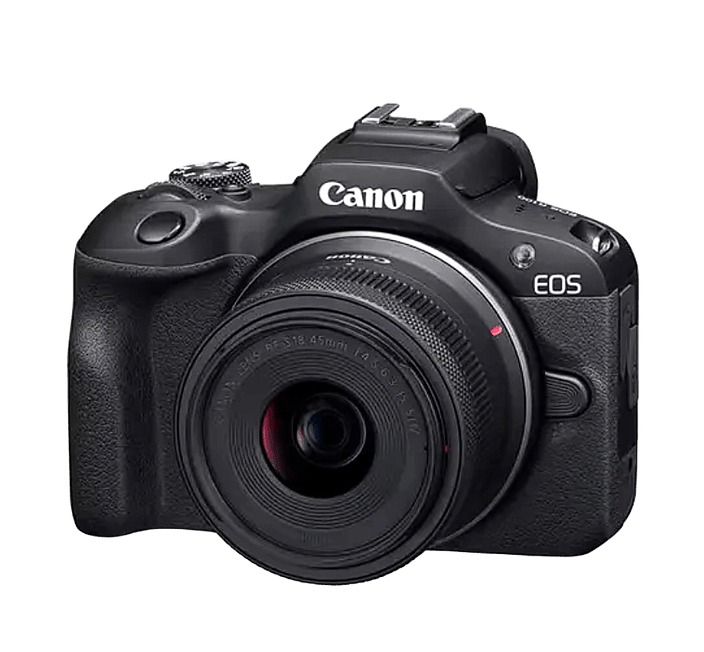
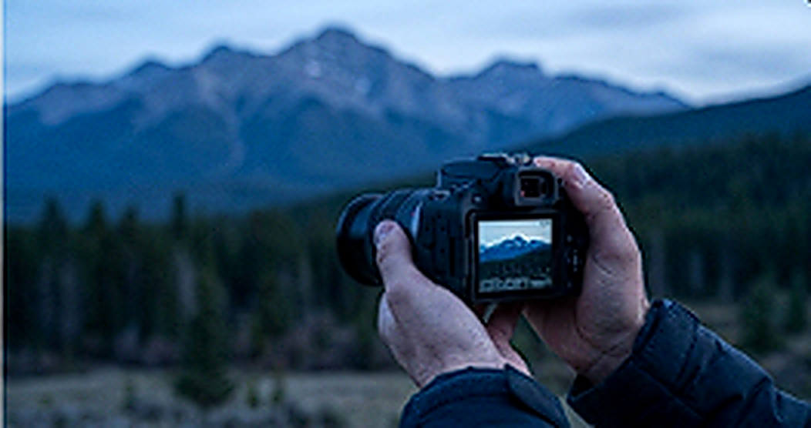
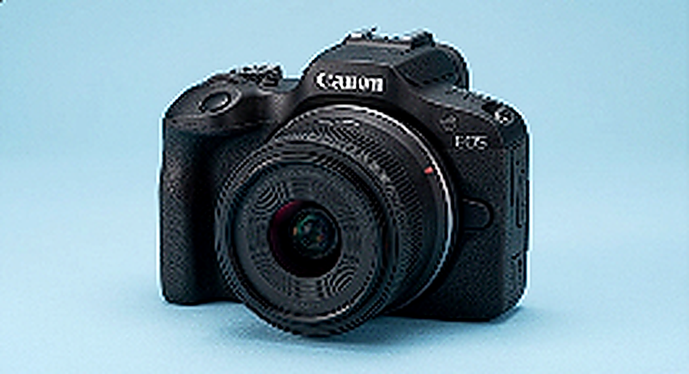
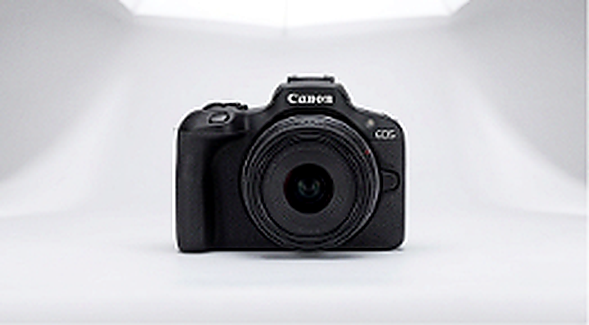
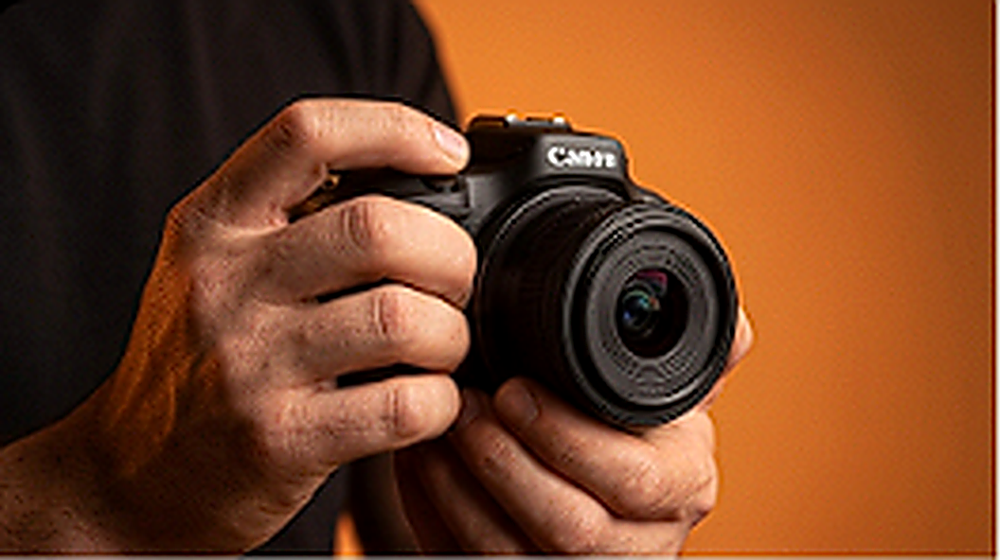
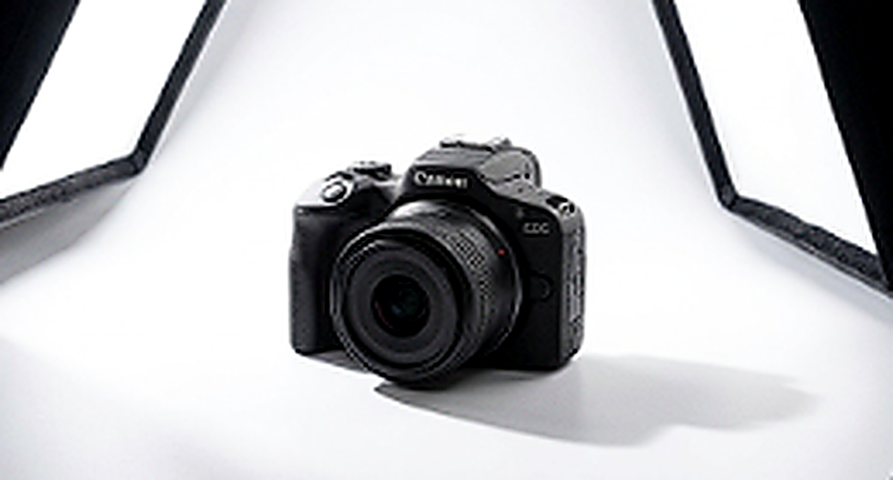

Da el salto a la verdadera calidad visual.
Ligera, potente e intuitiva. Diseñada para creadores de contenido, viajeros y entusiastas que buscan superar para siempre las limitaciones de la cámara de su teléfono.

El poder del sistema EOS R en tus manos
La Canon EOS R100 combina la excelencia óptica del legendario ecosistema RF con la máxima portabilidad para que nunca dejes de capturar recuerdos invaluables.
Desenfoque Óptico Natural
Olvídate del bokeh artificial por software. El sensor APS-C crea una separación real y elegante entre el sujeto y el fondo.
Dual Pixel CMOS AF
Enfoque automático rápido y exacto con seguimiento inteligente al rostro y a los ojos para que nadie quede borroso.
Video 4K y Cámara Lenta
Graba tus videos en resolución 4K o activa el modo HD a 120 fotogramas por segundo para secuencias cinematográficas en cámara lenta.
Conexión Bluetooth & Wi-Fi
Descarga tus capturas al teléfono al instante y compártelas directamente en tus redes favoritas con la app Canon Camera Connect.





Tecnología profesional hecha simple
Descubre cómo cada función de la EOS R100 eleva el estándar de tus creaciones fotográficas y de video.
Imágenes vivas y desenfoque natural
A diferencia de los filtros digitales de un smartphone que suelen recortar bordes de pelo o prendas, el sensor APS-C de la EOS R100 logra un desenfoque cremoso óptico que hace destacar a tu protagonista con elegancia natural.
- ✓ 24.1 Millones de píxeles efectivos
- ✓ Sensibilidad ISO hasta 12,800 (ampliable a 25,600)
- ✓ Mayor fidelidad tonal en sombras y luces
22.3 × 14.9 mm
6.4 × 4.8 mm
Detección Ocular Instantánea
El sistema Dual Pixel CMOS AF detecta de forma automática los ojos de sujetos en movimiento, asegurando que cada retrato tenga una mirada penetrante e impecable.
Listo para Redes & Video 4K
Graba video 4K a 24/25p con un nivel de detalle nítido y video vertical nativo para compartir directamente en TikTok, Instagram Reels y YouTube Shorts sin necesidad de editar en ordenador.
Asistente Creativo Guiado
¿Nuevo en fotografía manual? No te preocupes. El modo Creative Assist te permite ajustar desenfoque de fondo, brillo, contraste y tono de color en tiempo real con controles intuitivos y explicaciones claras.
Visor OLED de Alta Claridad
El visor electrónico integrado de 2.36 millones de puntos te permite componer fotos a pleno sol sin molestos reflejos en pantalla, mostrando una previsualización idéntica al resultado final.
App Canon Camera Connect
Usa tu smartphone como disparador remoto con vista previa en vivo o activa la sincronización automática de fotos por Bluetooth continuo y Wi-Fi de alta velocidad.
¿Por qué cambiar tu Smartphone por la EOS R100?
Aunque las cámaras de los teléfonos han avanzado, la física óptica y un sensor de gran escala continúan ofreciendo un nivel insuperable de profundidad y fidelidad.
| Aspecto |
Canon EOS R100
|
Smartphone Típico |
|---|---|---|
| Superficie de Captación de Luz Área real del sensor |
Ganador
Sensor APS-C (aprox. 332 mm²)
Capta casi 4 veces más luz: menos ruido y colores más vivos en la noche. |
Sensor diminuto (~25 - 50 mm²)
Sufre en interiores y noche, recurriendo a compresión y ruido. |
| Desenfoque de Fondo (Bokeh) Calidad del sujeto aislado |
Natural
Óptico y Físico Real
Transición gradual y suave sin errores de recorte en pelo, gafas o ropa. |
Computacional Artificial
Filtros por software que con frecuencia borran bordes de forma errática. |
| Flexibilidad Óptica Lentes y zoom |
Infinito
Objetivos Intercambiables RF / RF-S
Teleobjetivos para fauna, ultra gran angular para paisajes o luminosos f/1.8 para retrato. |
Lentes fijos microscópicos
Zoom digital que degrada fuertemente la nitidez y definición de imagen. |
| Ergonomía y Visor Control fotográfico |
Profesional
Grip anatómico + Visor Electrónico
Dispara con estabilidad total incluso bajo el sol cegador del mediodía. |
Cuerpo plano y resbaladizo
Difícil de ver la pantalla bajo luz directa y sin botones dedicados. |
| Ráfaga y Acción Capturar el instante exacto |
Preciso
Hasta 6.5 fps con disparo continuo
Sin retardo de obturación (shutter lag): disparas y congelas la acción. |
Retardo de disparo habitual
Procesamiento que a menudo pierde el momento clave en niños o mascotas. |
Especificaciones Detalladas
Todo lo que necesitas saber sobre las especificaciones de la Canon EOS R100.
Inspiración Fotográfica
Observa el dinamismo, la textura y el rendimiento de la Canon EOS R100 en distintos escenarios.


Preguntas Frecuentes
Todo lo que necesitas saber antes de dar el paso.
¡Absolutamente! La EOS R100 está concebida como la puerta de entrada ideal al sistema mirrorless EOS R. Cuenta con el modo guiado Creative Assist que explica con palabras sencillas y previsualizaciones visuales cómo lograr fondos desenfocados, cambiar tonos de color o congelar el movimiento sin necesidad de memorizar terminología compleja de entrada.
Sí, al 100%. Con el adaptador de montura oficial Canon EF-EOS R, puedes conectar cualquiera de los cientos de objetivos EF y EF-S del mercado manteniendo el autofoco completo, la medición y la estabilización óptica.
Sí. Gracias a la conectividad Bluetooth y Wi-Fi integrada, puedes enlazar tu smartphone iOS o Android con la aplicación gratuita Canon Camera Connect. Puedes transferir imágenes al momento, sincronizar datos de ubicación GPS e incluso controlar la cámara de forma remota.
El kit estándar incluye el cuerpo de la Canon EOS R100, el objetivo zoom compacto RF-S 18-45mm F4.5-6.3 IS STM, tapa protectora del cuerpo, correa de cuello para cámara EM-200DB, cargador de batería LC-E17E, batería recargable LP-E17 y guía de inicio rápido.
Canon EOS R100 + RF-S 18-45mm IS STM
El combo perfecto para empezar a crear contenido con calidad de estudio desde el primer minuto. Ligereza inigualable y versatilidad para el día a día.